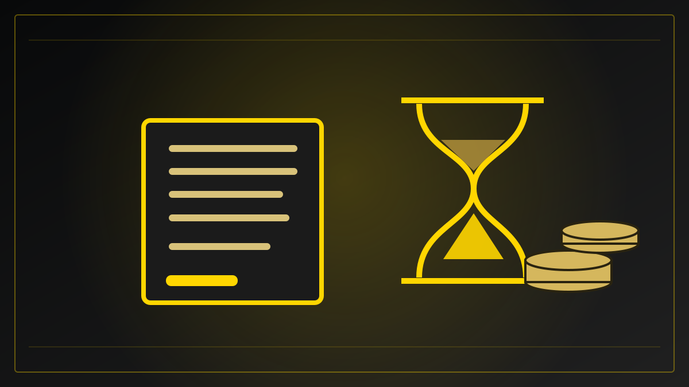

REDAKSJONELT UTKAST – IKKE PUBLISERT
Økonomi og velferd · Utkast opprettet 30. oktober 2026
Regjeringen vil gjøre pensjon enklere å forstå
Mange ønsker å forstå sin egen pensjon, men færre har undersøkt hva de kan få. Et nytt strategiforslag er sendt på høring – med mål om tydeligere informasjon om valgene som former pensjonsøkonomien.

Et system mange møter sent
Pensjonen formes gjennom mange år, men for mange blir temaet først konkret når pensjonsalderen nærmer seg. Det kan gjøre valgene vanskelige: Hva betyr deltid, jobbskifte og noen ekstra år i arbeid? Og hvordan virker offentlig pensjon sammen med ordninger fra arbeidsgiver?
Onsdag 28. oktober sendte Arbeids- og inkluderingsdepartementet et forslag til en helhetlig strategi for pensjonsinformasjon på høring. Målet er at flere skal forstå både rettighetene sine og de økonomiske konsekvensene av egne valg.
Interesse er ikke det samme som oversikt
Departementet viser til en kunnskapsoppsummering fra Oslo Economics, utarbeidet på oppdrag fra Nav. Den viser at over åtte av ti mellom 30 og 60 år er interesserte i pensjonen sin, men at bare omtrent halvparten har regnet på hva den kan bli. Blant dem som har gjort beregninger, oppga mer enn halvparten et lavere beløp enn de hadde trodd.
Undersøkelsen viser ikke hvordan alle vil ende økonomisk som pensjonister. Den peker derimot på et informasjonsproblem: Mange vet at pensjon er viktig, men mangler et samlet bilde av hva den faktisk kan bety for dem.
Forskjellige spørsmål gjennom livet
Strategiutkastet beskriver ulike behov i ulike livsfaser. For unge arbeidstakere handler det om opptjening og tjenestepensjon. For dem som har arbeidet en stund, kan jobbskifte, deltidsarbeid, sykdom eller opphold i utlandet påvirke bildet. Nær pensjonsalderen blir spørsmål om uttakstidspunkt, AFP, skatt og kombinasjon av jobb og pensjon viktigere.
Regjeringen peker også på grupper som kan ha større vansker med å bruke digitale verktøy, eller som har begrensede norskkunnskaper eller en svakere tilknytning til arbeidslivet. Et system kan være korrekt beskrevet på nettsider og likevel være vanskelig å forstå i praksis.
Forslag – ikke nye regler
Det som er sendt på høring, er et forslag om informasjon. Det innebærer ikke at nye pensjonssatser eller uttaksregler allerede er vedtatt. Departementet opplyser at strategien skal bygge videre på leverandørenes ansvar for informasjon, men foreslår tettere samarbeid og en tydeligere rolle for Nav.
Det arbeides parallelt med andre tiltak knyttet til pensjonsforliket, blant annet spørsmål om gradvis høyere pensjonsalder og minsteytelser. Disse prosessene må ikke blandes sammen med denne høringen.
Frist i januar
Høringen er åpen for innspill fram til 27. januar 2027. Et naturlig spørsmål videre blir hvordan rådene og oversiktene kan bli enklere i praksis – og om folk etter hvert faktisk får bedre forståelse av pensjonen sin.
For den enkelte er den mest nyttige oppfølgingen å undersøke sine egne opplysninger hos Nav og pensjonsleverandørene, og å få hjelp ved behov. Et generelt nyhetsoppslag kan forklare prosessen, men kan ikke beregne hva en bestemt person kommer til å få utbetalt.